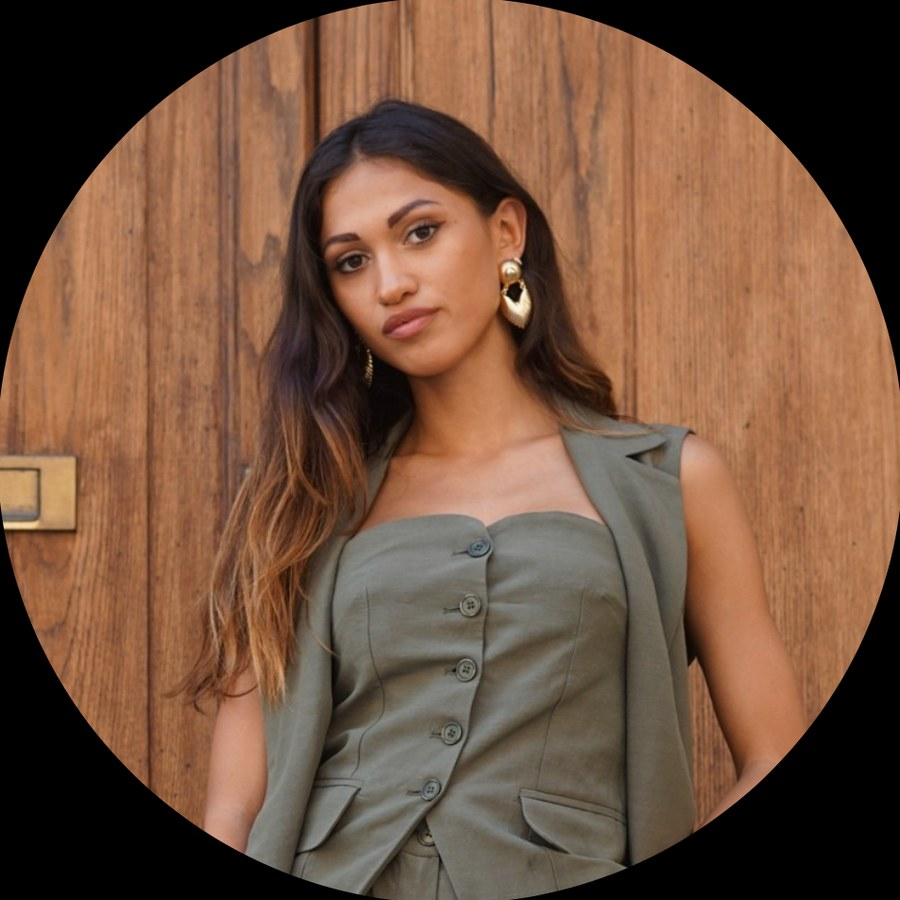
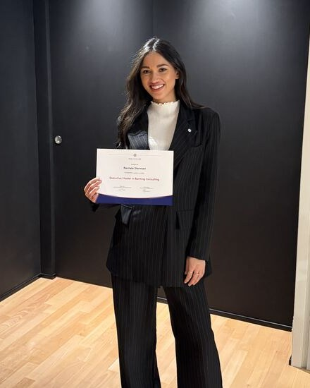

Consulente finanziaria
I tuoi progetti meritano un piano.
Ti accompagno nelle scelte che riguardano il tuo denaro: dal risparmio di ogni giorno ai progetti più importanti della tua vita. Con ascolto, chiarezza e una visione di lungo periodo.
Incontri in presenza oppure online, ovunque tu sia.

Prima di parlare di numeri, ascolto le persone.
Ogni persona ha una storia, delle esigenze e dei desideri diversi. Per questo il nostro primo incontro è dedicato a conoscerti: cosa desideri, cosa ti preoccupa, dove vuoi arrivare.
ConosciamociPer chi
Accanto a te, in ogni fase della vita.
Che tu stia muovendo i primi passi o debba gestire un patrimonio importante, il punto di partenza è sempre lo stesso: i tuoi obiettivi.
- i.
Giovani e giovani coppie
I primi risparmi, la prima casa, i progetti da costruire insieme.
- ii.
Famiglie
La serenità delle persone che ami, oggi e domani.
- iii.
Professionisti
Un ordine chiaro tra reddito, risparmio e futuro.
- iv.
Imprenditori
Patrimonio personale e aziendale, in una visione unica.
- v.
Patrimoni importanti
Una pianificazione completa, pensata anche per chi verrà dopo.
Servizi
Di cosa possiamo parlare insieme.
Ogni servizio parte dalle domande che ti fai davvero, con risposte semplici.
Conto corrente
Uno strumento di ogni giorno, adatto alle tue abitudini.
02Piano di accumulo
I piccoli passi di oggi per i progetti di domani.
03Investimenti
Dare una direzione ai propri risparmi.
04Previdenza
Il futuro si costruisce anche pensando alla pensione.
05Protezione
Proteggere ciò che conta davvero.
06Mutui
La casa dei tuoi progetti merita una pianificazione attenta.
07Prestiti personali
Realizzare un progetto, con una scelta sostenibile.
08Grandi patrimoni
Una visione d'insieme per valorizzare il patrimonio.
09Budget e gestione del denaro
Conoscere le proprie risorse è il primo passo.
Il mio metodo
Un percorso costruito intorno a te.
«Non esiste un unico percorso valido per tutti. Esiste un percorso da costruire intorno a ogni persona.»
Scopri come lavoroAscolto
Conoscere la persona, la sua storia e i suoi progetti.
Analisi
Comprendere la situazione economica e patrimoniale, le risorse e le priorità.
Pianificazione
Costruire un percorso coerente con le tue esigenze, le tue possibilità e il tuo profilo di rischio.
Accompagnamento
Seguirti nel tempo, attraverso il dialogo e verifiche periodiche.

Chi sono
Piacere, sono Rachele.
Credo che dietro ogni progetto finanziario ci siano prima di tutto una persona, una storia e degli obiettivi da realizzare. Il mio lavoro è aiutarti a dare forma a quegli obiettivi, con un percorso chiaro e pensato su di te.
- Laurea in Economia Aziendale e Management
- Master in Gestione d'Impresa
- Formazione professionale in ambito finanziario
Calcolatore PAC
Quanto possono fare i piccoli passi?
Con il calcolatore puoi simulare un piano di accumulo: scegli il capitale iniziale, il versamento mensile, la durata e il rendimento annuo, e osserva come il tempo lavora sui tuoi risparmi.
Iniziamo
I tuoi progetti meritano un piano.
Raccontami da dove vuoi partire. Ci incontriamo in ufficio oppure online, con calma e senza impegno.